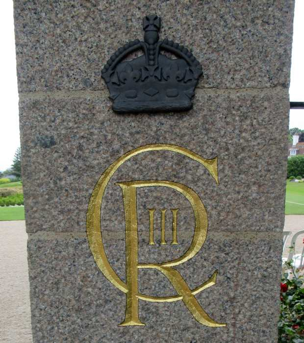

Lé 8 d'Septembre 2022 la Reine Lîzabé II, Duc dé Nouormandie, pâssit l'pas et san fis Charles, lé Prînce dé Galles, dévînt l'Rouai. I' fit procliâmé Rouai, et not' Duc, dans l'Vièr Marchi à Saint Hélyi lé 11 dé Septembre 2022.
Lé 8 d'Septembre 2022 la Reine Lîzabé II, Duc dé Nouormandie, pâssit l'pas et san fis Charles, lé Prînce dé Galles, dévînt l'Rouai. I' fit procliâmé Rouai, et not' Duc, dans l'Vièr Marchi à Saint Hélyi lé 11 dé Septembre 2022.
I' fut né l'14 dé Novembre 1948 au Palais d'Buckingham. Quand l'Rouai George VI, Duc dé Nouormandie, mouothit l'6 d'Févri 1952, sa fil'ye Lîzabé d'vîn la Reine, not' Duc, et san fis Charles dévîn l'héthitchi au trône et auve chenna i' r'chut les titres dé Duc dé Cornouailles et Duc dé Rothesay.
Lé janne Prînce fut envyé à l'êcole (au run d'èrchéver la duithie privée traditionnelle au palais) épis en 1967 i' s'en fut à l'Unnivèrsité d'Cambridge où'est qu'il êtudgiait l'archéologie et l'histouaithe. Comme êtudgiant, i' fit partie d'eune êtchipe dé dêfouaithie archéologique à La Cotte dé Saint Brélade en Jèrri.
En 1969, i' fut învesti comme Prînce dé Galles duthant eune cérémonnie au Châté d'Caernarfon.
Lé Prînce siut eune cârriéthe militaithe s'lon la tradition d'la Fanmil'ye Rouoyale. I' pilotit des jets et des hélicoptéthes et sèrvit dans la Mathinne Rouoyale.
En 1981 i' s'mathyit auve la Danme Diana Spencer tchi d'vînt Prîncêsse dé Galles et tchi portit deux fis: Ouoyamme, en 1982, et Henri, en 1984. En 1992 lé Prînce et la Prîncêsse lus s'pathîtent et en 1996 lus dêmathyîtent.
En 1997 Diana, Prîncêsse dé Galles, fut tuée dans eune avâthie d'vaituthe à Paris.
Charles s'èrmathyit en s'gondes neuches en 2005 auve Camilla Parker-Bowles tchi faîthait sèrvi l'titre dé Duchêsse dé Cornouaille. À la siette dé l'accêssion d'san bouonhomme au trône ou d'vînt la Reine Camilla.
Lé Rouai vîsitit Jèrri quat' fais coumme Prînce: en 1968 coumme êtudgiant; en 1995 pouor l'chînquantchiéme annivèrsaithe d'la Libéthâtion quand i' dêvouailit la Stchulptuthe d'la Libéthâtion; en 2004 duthant les célébrâtion des 800 ans d'îndépendance, quand i' dêvouailit l'portrait holographique dé Sa Majesté la Reine, not' Duc, et l'Adgulle du Jubilé à la Caûchi d'Saint Hélyi; et en 2012 pouor lé Jubilé d'Dgiamant.
Lé Rouai vînt en Jèrri au mais d'Juilet 2024.
Lé Rouai est bein connu pouor sén întéthêt dans l'envithonnement, l'héthitage, l'architectuthe, la jannèche, et d'aut's sujets.

Viyiz étout: